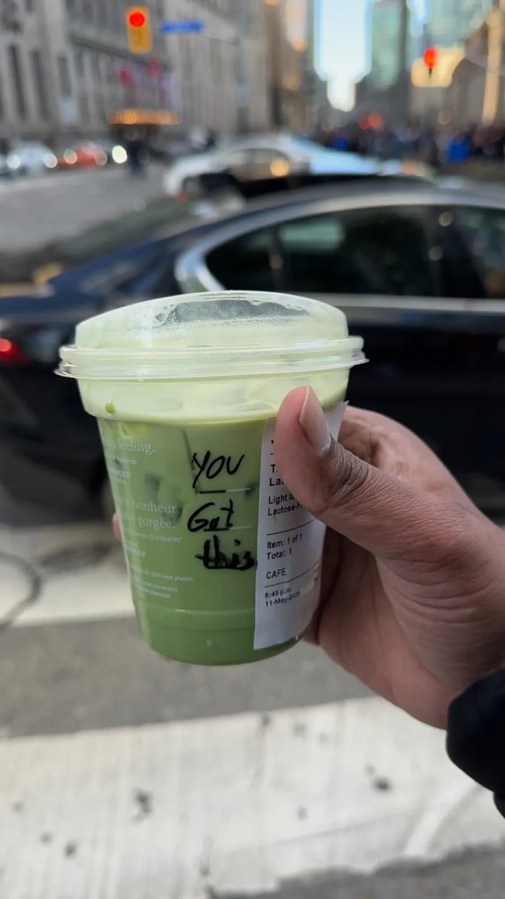
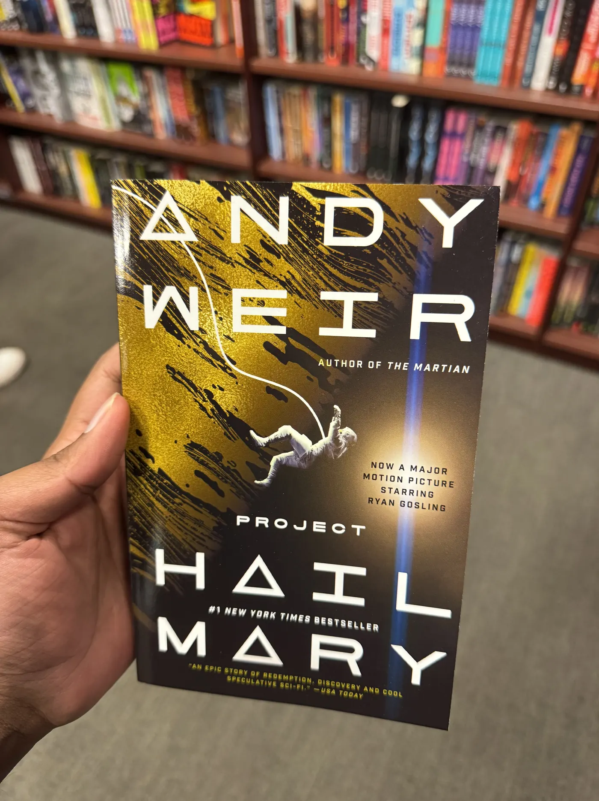
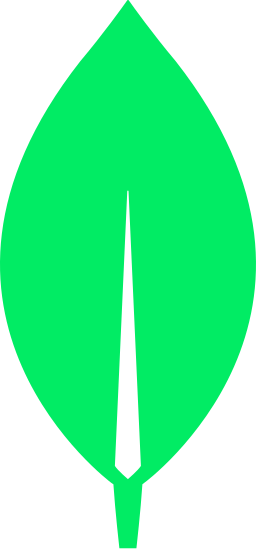
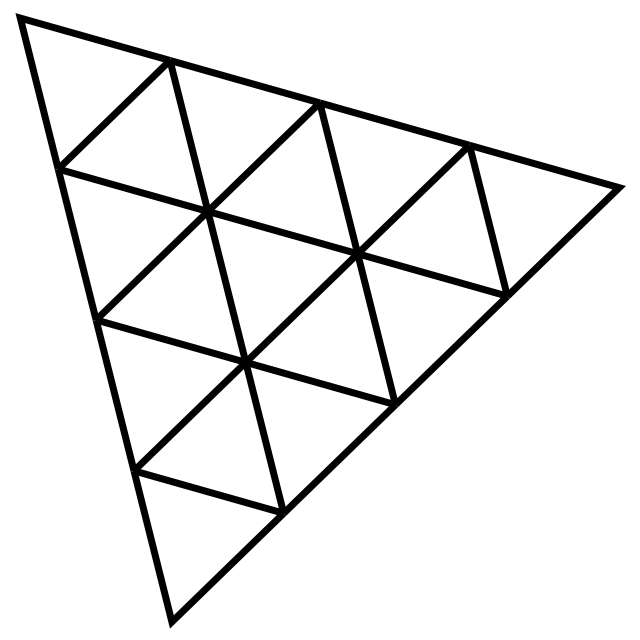
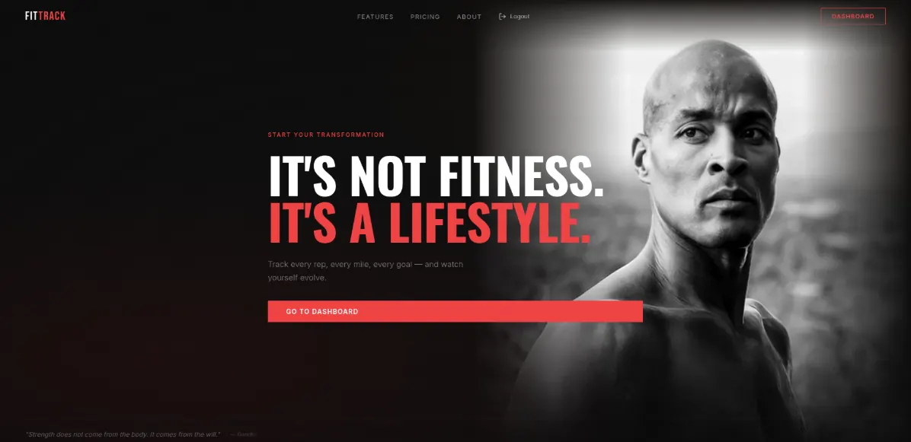
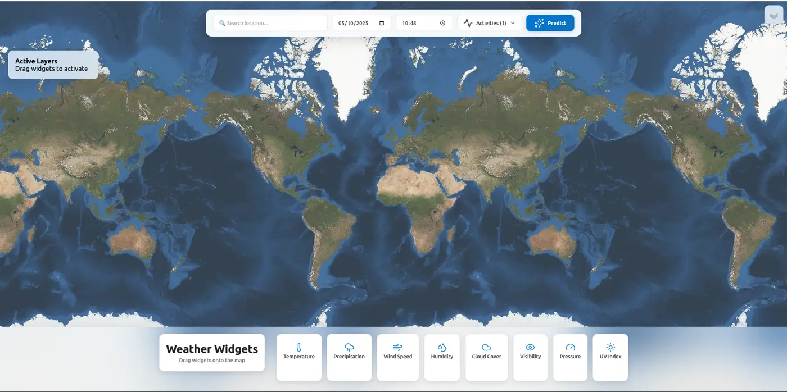
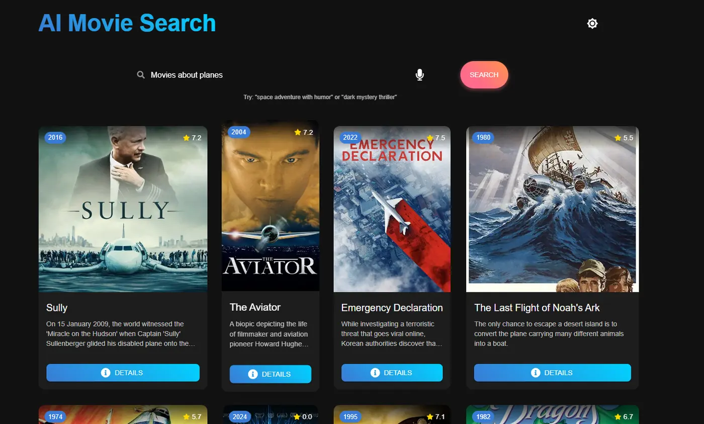
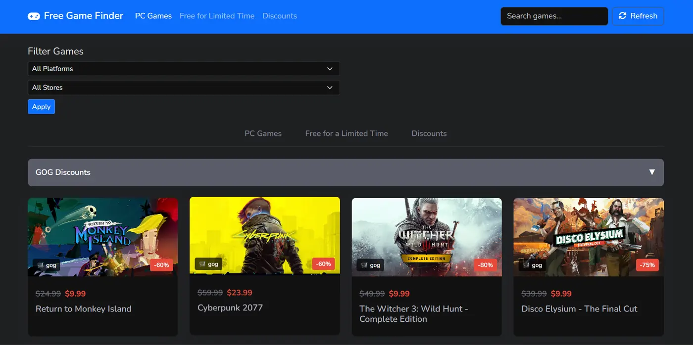
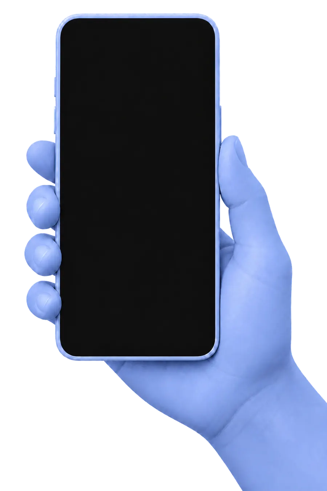

HEY, I’M VIMANGA.
I turn ambitious ideas, research, and unruly data into software people can actually use.
Behind the work / 01
About me
Science Fiction
Long Walks The machinery still needs a human operator.


What I like making
Useful things with difficult machinery underneath.
I enjoy turning messy constraints, unfamiliar domains, and ambitious ideas into products that feel direct and dependable.
I’m Vimanga, a software engineer who likes turning difficult ideas into useful things. Whether I’m building an AI model, shaping an interface, or working on the systems underneath, I’m happiest when the result feels simple and dependable. Curiosity gets me started. Usefulness keeps me going.
Academic foundation / 02
Education
Two chapters that shaped how I approach software, artificial intelligence, and research.
Graduate study
M.Sc.
Computer Science
University of Windsor
Specialization in Artificial Intelligence · Thesis research in adaptive mobile intelligent tutoring systems.
Undergraduate study
B.Sc.
Computer Science
Wichita State University
Wichita, Kansas · The technical foundation behind my work in software and intelligent systems.
Tools I reach for
My tech stack
Languages, frameworks, and infrastructure I use to move ideas from research to reliable products.
 React
React TypeScript
TypeScript Python
Python PyTorch
PyTorch OpenAI
OpenAI FastAPI
FastAPI
 Node.js
Node.js
MongoDB Docker
Docker Firebase
Firebase Google Cloud
Google Cloud Git
Git
 Tailwind CSS
Tailwind CSS
Three.js JavaScript
JavaScript Java
Java- SQL
 Flask
Flask
Selected
projects.
Products, experiments, and research translated into useful systems—with a bias toward clarity, evidence, and things that actually ship.
Featured / 06Case studies / 02Open source / 06

01 / WinHacks finalist
A recovery assistant that turns biometrics, nutrition, and activity signals into practical daily guidance.


02 / NASA Space Apps
A geospatial recommender combining satellite imagery, forecasts, statistical scoring, and language models.

03 / NLP product
Natural-language movie discovery using React, Hugging Face NLP, and the TMDB API.

04 / Full-stack
A full-stack aggregator monitoring six-plus platforms with intelligent caching to reduce API calls.


05 / Mobile learning
A mobile learning platform with mood-responsive avatars, gamified lessons, and real-time feedback.


06 / Cross-platform
A quiet cross-platform reading experience that brings Buddhist teachings into daily life.
The Independent Research Journal
Ideas made
operational.
Research at the intersection of machine intelligence, language, learning systems, and the people they serve.
Research edition
Vol. 04 · 2025—2026
Four selected papers
The Research Desk
Selected papers, studies & working systems
Top-k Densest Subgraph Augmentation for Hypergraph Neural Networks
Density-based augmentation can strengthen natural clusters in hypergraphs—but the same strategy may erase useful sparse signals. A cross-domain study finds gains of up to four percent on movie-profit prediction and sharply different outcomes on benchmark networks.
Transformer-Based Automated Interlinear Glossing for Low-Resource Languages
A character-level Transformer combines unsupervised morpheme segmentation, relative positional encoding, and translation cues to generate linguistic glosses for languages with limited annotated data.
Comparing Machine Learning Approaches for Heart Disease Indicators
From logistic regression to TabNet, this comparative study asks which machine-learning models most reliably detect heart-disease indicators—and how systematic tuning changes their performance.
Hybrid POMDP for Mobile Intelligent Tutoring Systems
A Deep Q-Network controller jointly selects pedagogical actions, compute placement, and avatar fidelity across changing mobile conditions. Simulations produced a 44 percent relative improvement in normalized learning gain while keeping 98.68 percent of tutoring steps within a 500 ms threshold.
Experience / 05
Work shaped by
real systems.
Graduate Assistant
University of Windsor · Canada
- Support 100+ Computer Networks students through labs, assessments, and office hours.
- Teach practical routing, TCP/IP, Wireshark, Cisco Packet Tracer, and network security.
IT Specialist
Etezazi Industries · USA
- Migrated more than 100 users to a new domain with zero downtime.
- Managed identity, VPN, firewall, server, and database infrastructure.
- Built a Python inventory workflow that reduced scrap parts by 40%.
IT Intern
Etezazi Industries · USA
- Resolved more than 200 IT requests through centralized monitoring.
- Supported operational databases and wrote SQL reporting queries.
Contact / 06
Have a difficult
problem? Good.
I’m interested in software engineering, applied AI, research, and teams building ambitious things with real utility.
Prefer email?vimangau@gmail.com↗